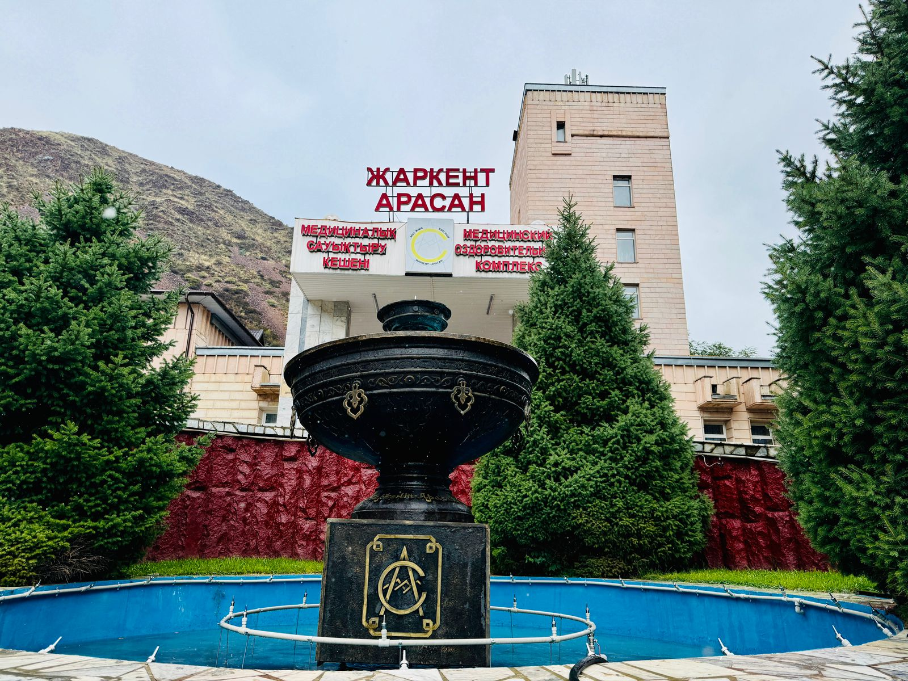

Расположение: Алматинская область, Панфиловский район
"Жаркент-Арасан" – это уникальный санаторий, предлагающий лечение на основе природных радоновых и термальных йодо-бромных минеральных вод. Процедуры эффективны при заболеваниях опорно-двигательного аппарата, нервной системы, кожи и сердечно-сосудистой системы. Расположен в живописной местности предгорий Джунгарского Алатау.